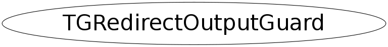

class TGRedirectOutputGuard
TGRedirectOutputGuard This class provides output redirection to a TGTextView in guaranteed exception safe way. Use like this: { TGRedirectOutputGuard guard(textview); ... // do something guard.Update(); ... // do something else } when guard goes out of scope, Update() is called to flush what left on the screed and the output is automatically redirected again to the standard units. The exception mechanism takes care of calling the dtors of local objects so it is exception safe. Optionally the output can also be saved into a file: { TGRedirectOutputGuard guard(textview, file, mode); ... // do something }
Function Members (Methods)
public:
| TGRedirectOutputGuard(const TGRedirectOutputGuard&) | |
| TGRedirectOutputGuard(TGTextView* tv, const char* flog = 0, const char* mode = "a") | |
| virtual | ~TGRedirectOutputGuard() |
| static TClass* | Class() |
| virtual TClass* | IsA() const |
| TGRedirectOutputGuard& | operator=(const TGRedirectOutputGuard&) |
| virtual void | ShowMembers(TMemberInspector& insp) |
| virtual void | Streamer(TBuffer& b) |
| void | StreamerNVirtual(TBuffer& b) |
| void | Update() |
Data Members
private:
| TString | fLogFile | |
| FILE* | fLogFileRead | |
| TGTextView* | fTextView | |
| Bool_t | fTmpFile |
Class Charts
{kind=link}
{kind=link}
{kind=link}
{kind=link}

Function documentation
TGRedirectOutputGuard(TGTextView* tv, const char* flog = 0, const char* mode = "a")
void Update()